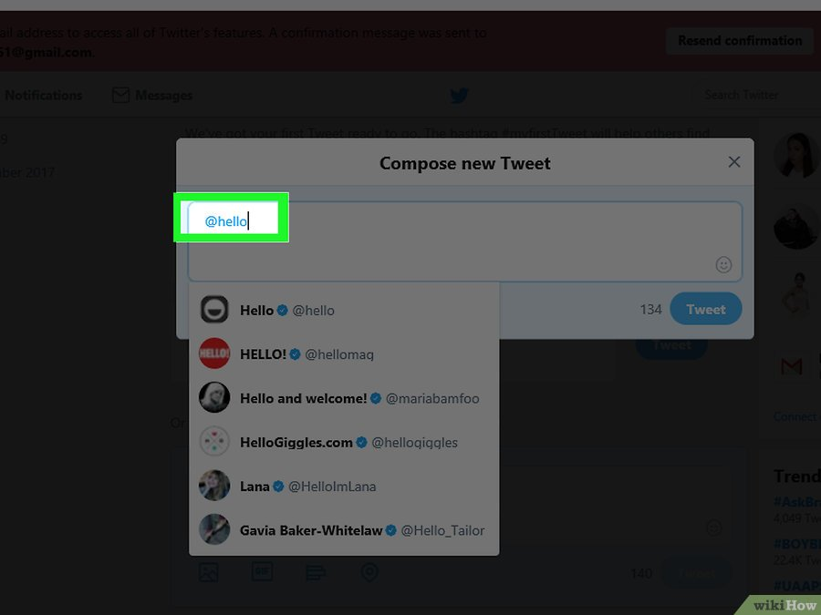

Всё о Twitter
Twitter определение
Тройка лидеров и пять популярных событий
Шесть причин для ретвита и основные факты
История
Устройство
Особенности
Как пользоваться
Правила твиттера
Возможности
Фотографии
Словарь
Карта сайта
Об авторе
6. В разделе "Конфиденциальность и безопасность" поставьте галочку в поле "Указывать местоположение в твитах", чтобы указывать, откуда были отправлены ваши твиты. Это не совсем то, чтобы вы указывали ранее в графе “Местоположение”. После активации этой опции, ваши твиты будут сопровождаться комментарием “Отправлено из...” с настраиваемой точностью. Включать и выключать эту опцию можно по желанию.
7. Ознакомьтесь с настройками конфиденциальности и безопасности. Они расположены под вкладкой "Учетная запись". Отметьте нужные галочки и нажмите “Сохранить изменения”.
8. Время от времени меняйте пароль. Лучше всего защитить аккаунт с помощью периодической смены пароля. Это можно сделать из вкладки “Пароль” в разделе “Настройки и конфиденциальность”. Тут все просто — вводите старый пароль, затем новый, причем дважды. В конце нажмите “Сохранить изменения”.
9. Подумайте, хотите ли вы получать email’ы от Твиттера. На вкладке “Уведомления” можно отметить те действия, о которых вы желаете получать уведомления на email.
Другие возможности

1. Посылайте ПС. ПС, они же — прямые сообщения, они же — DM. Они отправляются непосредственно тому, кому вы хотите. Это что-то вроде внутренней почты, хотя лимит в 280 знаков сохраняется и здесь. К тому же отправлять ПС можно лишь тем, кто подписан на вас, то есть только вашим фолловерам. ПС видят только два человека: отправитель и получатель, что делает их более… личными. Чтобы отправить ПС, перейдите на страницу фолловера и нажмите на “Отправить личное сообщение”. Помните, что некоторым людям не нравится сама суть ПС на Твиттере, который, в общем-то, не предназначен для рассылки личных сообщений. Особенно сильно люди не любят ПС тогда, когда они используются в рекламных целях.